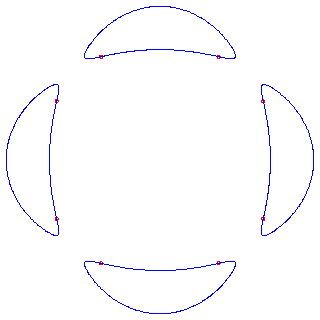

Schläfli (see the survey of Coxeter [Co]) showed there are 4 possibilities for the number of real lines on a real cubic surface: 27, 15, 7, or 3. Recent developments in enumerative geometry (mirror symmetry) have led to the solution of a large class of similar enumerative problems involving, among other things, the number of rational curves of a fixed degree on a Calabi-Yau threefold. (See the book of Cox and Katz [CK].) For example, on a general quintic hypersurface in P4 there are 2875 lines [Harr], 609,250 conics [Ka], and 371,206,375 twisted cubics. The number of twisted cubics and higher degree rational curves was computed in the seminal paper of Candelas, de la Ossa, Green, and Parkes [COGP]. How many of the curves can be real in problems of this type? For example, how many real lines can there be on a real quintic hypersurface in P4?
A real homogeneous polynomial f(x) is positive semi-definite (psd) if f(x) is non-negative whenever x is real. Hilbert [Hi1] proved that a psd ternary quartic is a sum of three squares of real quadratic forms. In fact, a general quartic is a sum of 3 squares of complex quadratic forms in 63 different ways [Wa]. Powers and Reznick [PR] studied the question of how many ways one may represent a ternary quartic as a real sum or difference of squares. In every instance, they found that 15 of the 63 ways involved real quadratic forms. Is it true that a general psd quartic is a sum or difference of real squares in exactly 15 different ways?§
A general plane curve C of degree d has
3d(d-2) flexes.
These are the points on C where the Hessian determinant of the form
defining C vanishes.
Since the Hessian determinant has degree 3(d-2), we expect there to be
3d(d-2) such points.
This involves intersecting the curve with its Hessian curve, and
not with a general curve of degree 3(d-2).
A real smooth plane cubic has 3 of its 9 flexes real.
Zeuthen [Ze2] found that at most
8 of the 24 flexes of a real plane quartic can be real.
An example of a plane quartic with 8 real flexes is provided by the Hilbert
quartic [Hi2], which is defined by
|  |
| Figure 3: Hilbert's quartic: a plane quartic with 8 flexes |
| (It is instructive to view this quartic together with its Hessian |
Harnack [Harn] proved that a smooth real algebraic curve of genus g has at most g + 1 topological components, and he constructed real algebraic curves of genus g with g + 1 components. In particular, a plane curve of degree d has genus g = (d - 1)(d - 2)/2 and there are real plane curves of degree d with g + 1 components. (An example is provided by Hilbert's quartic, which has genus 3.) Finer topological questions than enumerating the components leads to (part of) Hilbert's 16th problem [Hi3], which asks for the determination of the topological types of smooth projectively embedded real algebraic varieties.
A variant concerns rational plane curves of degree d. A general rational plane curve of degree d has 3(d - 2) flexes and g = (d - 1)(d - 2)/2 nodes. Theorem 4.2 implies that there exist real rational plane curves of degree d with all 3(d - 2) flexes real, which we call maximally inflected curves. See Remark 5.8 for the connection. Such curves have at most g - d + 2 of their nodes real, and there exist curves with the extreme values of 0 and of g - d + 2 real nodes [KS]. For example, a rational quartic (d=4) has 6 flexes and g=3 nodes. If all 6 flexes are real, then at most one node is real. Figure 4 shows maximally inflected quartics with and 0 and 1 nodes. The flexes are marked by dots.
Recently, Huisman asked and answered a new question about real curves. A component X of a real algebraic curve is a psuedoline if its homology class [X] in H1(PnR, Z/2Z) is non-zero, and an oval otherwise.
Let N be that number, when there are finitely many such hypersurfaces.
| N = | (g+1)mg if C has g + 1 components |
| mg if C has g components. |
It is notable that this problem can only be stated over the real numbers.